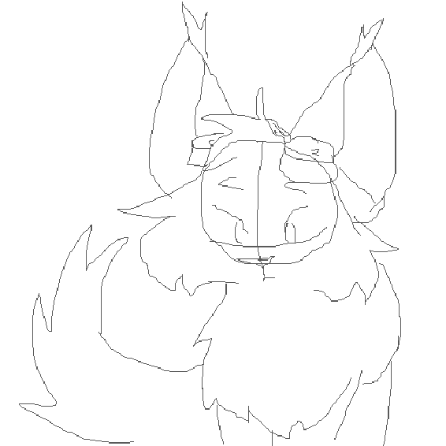
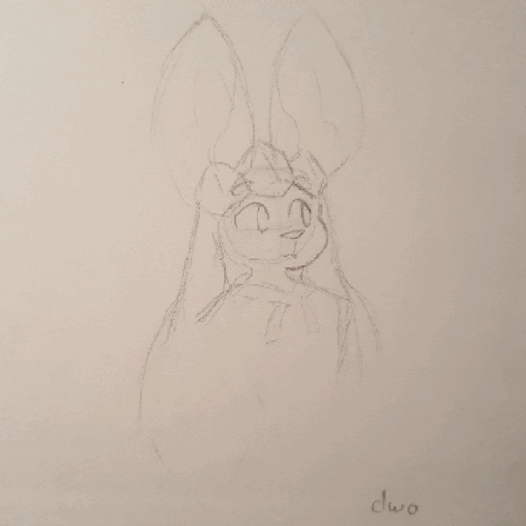
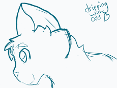
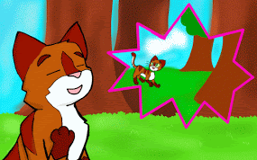
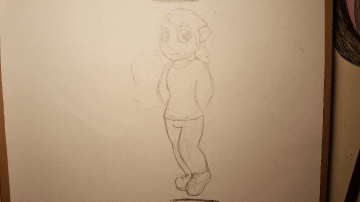
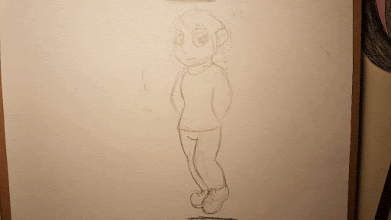
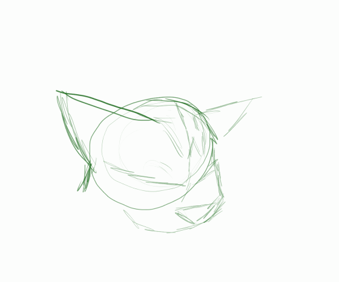

Welcome to Dewside
Animation
Everything before 2020 is here because I think it's good to remember where I started, lol
2021
This is a small animation of a cat character I did while procrastinating on an assignment. I drew it with my laptop mousepad, and used Pixilart.com.
2020
This one's a paper animation of my Eeveeverse character, Glacier! What's he so excited about? Perhaps he's seeing Quincy walk into the room.
2019
A wonky-looking animation I did under a past name.
2018
A clip from a Warrior Cats multi animator project that I hosted (it was never completed, only 3 people joined).


Paper animation of a my old character Quill turning into a panther.

Rotating cat head, give me your wisdom...